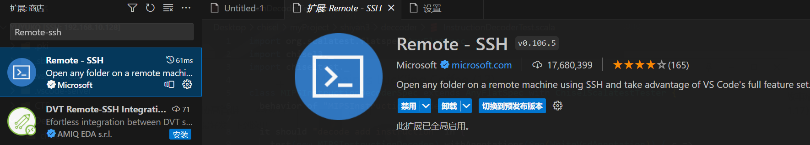
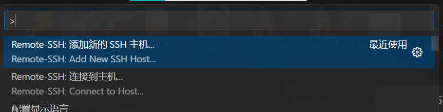
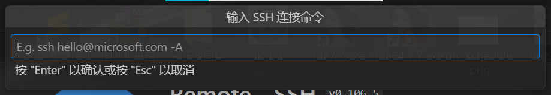
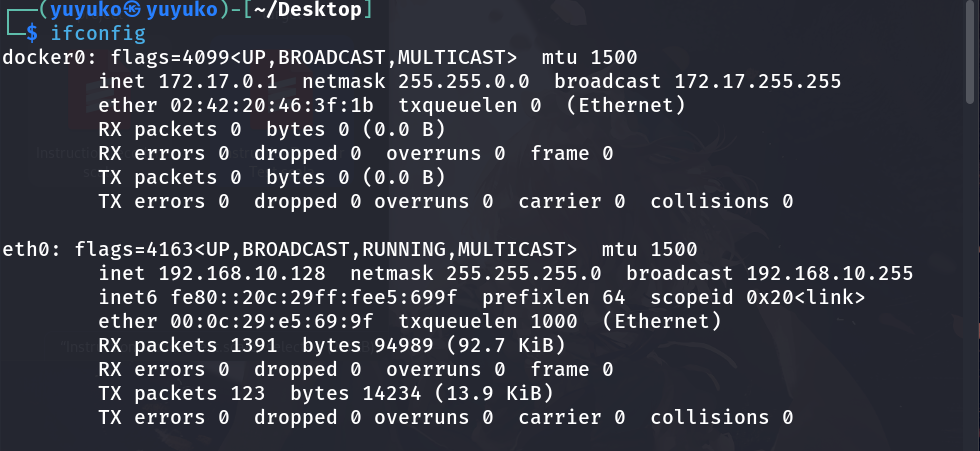
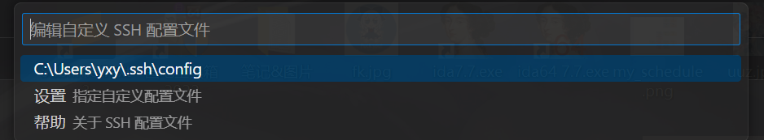
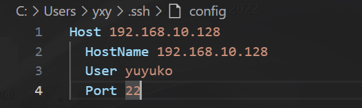
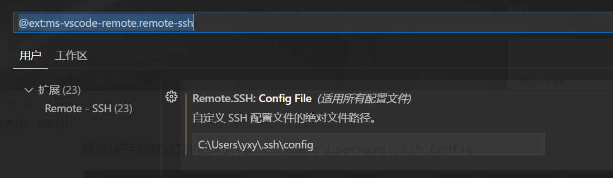
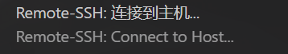

在vscode使用ssh连接Linux虚拟机工作
最近发现一个用vscode远程操控虚拟机的方法，感觉比直接操作虚拟机顺滑多了(虚拟机有点卡)，在此记录一下。
1、Kali Linux虚拟机安装openssh-server
安装openssh-server
1 | sudo apt-get install opensh-server |
启动服务：
1 | sudo service ssh start |
可以使用下面的命令查看ssh服务状态：
1 | sudo service ssh status |
2、vscode中的配置
安装Remote-SSH插件：

装好后按F1，选择添加SSH主机

格式为： 用户名@主机ip，其中用户名随意，主机ip在虚拟机中，eth0对应的ip就是虚拟机ip


保存主机配置到配置文件：
直接保存到默认文件即可，即 C:\Users\Username\.ssh\config

在配置文件设置端口：

注意：在配置完成后，需要在Remote-SSH的扩展设置中将配置文件的绝对路径添加进去，否则连接虚拟机的时候会因为vsc的权限不够而无法连接。

3、连接到远程Linux虚拟机
再次F1，Remote-SSH连接到主机：

点击后选择刚刚添加的主机ip就能打开远程连接窗口。
选择系统为Linux，输入Linux账户的密码就能正常连接了。
本文作者：
*月遇丛雲花遇風*
本文链接： https://t3uk1.github.io/2023/10/31/在vscode使用ssh连接Linux虚拟机工作/
版权声明： 除特殊说明外，本作品采用 CC BY-NC-SA 4.0 协议进行许可。转载请注明出处！
本文链接： https://t3uk1.github.io/2023/10/31/在vscode使用ssh连接Linux虚拟机工作/
版权声明： 除特殊说明外，本作品采用 CC BY-NC-SA 4.0 协议进行许可。转载请注明出处！